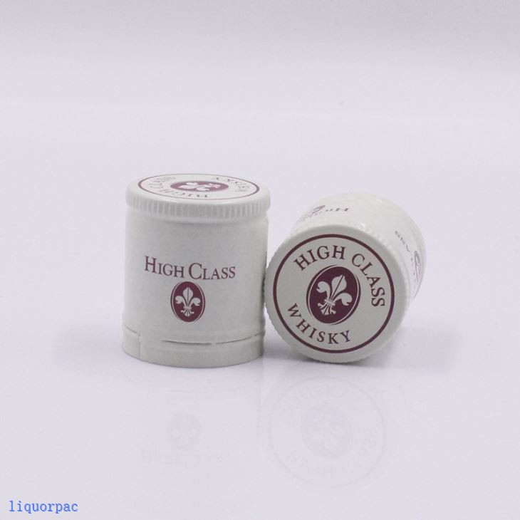
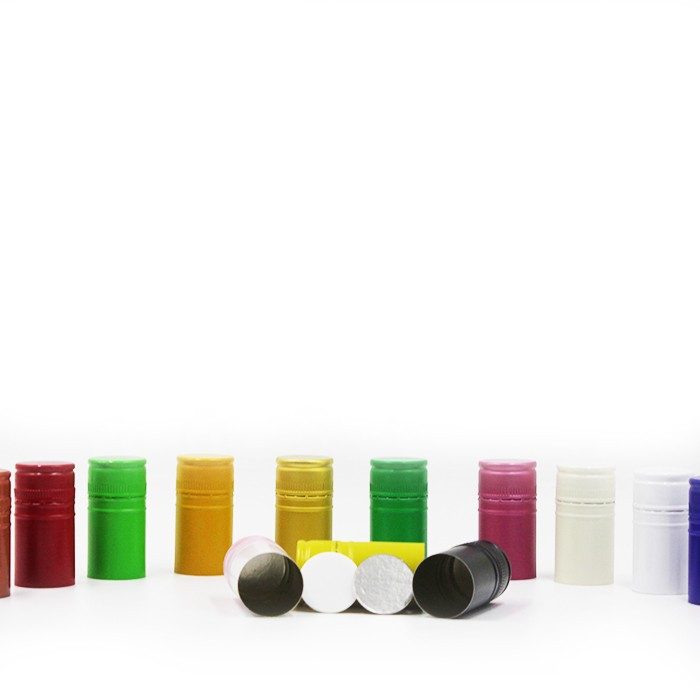

Can twist top caps be used for industrial chemicals? That's a question I've been getting a lot lately, especially since I'm a supplier of Twist Top Caps. I thought I'd take some time to break down the factors at play and share my thoughts on whether these caps are a good fit for industrial chemical applications.
First off, let's talk about what twist top caps are. They're a type of closure that you can simply twist on and off a container. They're super convenient and are widely used in many industries, like food, beverage, and cosmetics. You see them on water bottles, salad dressing containers, and even some small shampoo bottles. They're popular because they're easy to use and provide a fairly tight seal.
But when it comes to industrial chemicals, things get a bit more complicated. Industrial chemicals are a diverse bunch - we're talking about everything from acids and bases to solvents and reactive compounds. Each of these chemicals has its own unique properties, like how corrosive it is, its volatility, and its reactivity with different materials.
One of the first things to consider is the material of the twist top cap. Most twist top caps I supply are made from plastics like polyethylene (PE), polypropylene (PP), or sometimes they have a metal liner for a better seal. Plastic is great because it's lightweight, relatively inexpensive, and easy to mold into different shapes. However, different plastics have different chemical resistances. For example, PE is resistant to many nonpolar solvents but can be attacked by some strong oxidizing agents. PP is a bit more chemically resistant than PE and can handle a wider range of solvents, but it can still be affected by certain chemicals over time.
If you're dealing with a highly corrosive chemical like hydrochloric acid, a regular plastic twist top cap might not last very long. The acid could eat away at the plastic, causing it to break down and lose its sealing ability. In cases like these, you might need a cap with a more resistant liner, like a fluoropolymer. Fluoropolymers are known for their excellent chemical resistance and can withstand a wide range of harsh chemicals. But they're also more expensive, so it's a trade - off between cost and chemical compatibility.
Volatility is another factor. Some industrial chemicals evaporate easily, and you need a cap that can keep those vapors from escaping. Twist top caps can provide a good seal, but it depends on the design. Some caps have a simple screw - on mechanism, while others have additional features like a gasket or a tamper - evident band. A good gasket can help create an airtight seal, preventing the loss of volatile chemicals.


Reactivity is also crucial. You don't want the chemicals in the container to react with the cap material. For example, if you're storing a chemical that's reactive with metal, and your twist top cap has a metal liner, you could end up with a chemical reaction that produces unwanted products or weakens the cap's integrity.
Now, let's talk about the advantages of using twist top caps for industrial chemicals. One big plus is ease of use. Workers in an industrial setting can quickly and easily open and close containers with twist top caps, which can save time and improve efficiency. They're also relatively easy to install on containers, which can be a plus for manufacturers.
Another advantage is that twist top caps come in a variety of sizes and styles. Whether you're dealing with a small sample container or a large drum, there's likely a twist top cap that will fit your needs. This flexibility makes them a popular choice for many industrial applications.
However, there are some limitations. As I mentioned earlier, not all twist top caps are suitable for all chemicals. And if you're dealing with extremely high - pressure or high - temperature applications, twist top caps might not be the best choice. They're generally designed for normal operating conditions, and they might not be able to withstand the stress of extreme environments.
When it comes to compliance, industrial chemical storage and transportation are often governed by strict regulations. You need to make sure that the twist top caps you use meet all the relevant safety standards. This includes things like being able to withstand certain pressure levels, preventing leakage, and being resistant to the chemicals they'll be in contact with.
So, can twist top caps be used for industrial chemicals? The answer is, it depends. In many cases, they can be a great option, especially for less aggressive chemicals and normal operating conditions. But for more challenging applications, you need to carefully consider the chemical properties of the substance, the material of the cap, and the regulatory requirements.
If you're in the market for twist top caps for your industrial chemical applications, I'd be happy to help. I've got a wide range of caps available, including different materials and designs to suit various needs. Whether you're looking for something simple and cost - effective or a high - performance cap for a demanding application, I can work with you to find the right solution.
We also offer other types of closures. Check out our Aluminum Closures For Wine which are perfect for the wine industry, providing a secure and stylish seal. Our Pull Ring Easy Open Aluminum Crown Caps are a great option for beverages that need a quick - opening closure. And if you're in the spirits industry, our 30*35 Mm Aluminum ROPP Caps For Spirit Cap offer a high - quality and secure closure.
If you'd like to discuss your specific requirements and see if our twist top caps or other closures are a good fit for your business, don't hesitate to reach out. We can provide samples and detailed product information to help you make an informed decision.
References
- "Handbook of Chemical Resistance of Plastics and Elastomers" by Norman C. Billingham
- "Industrial Chemical Storage and Handling Guidelines" published by relevant industry regulatory bodies